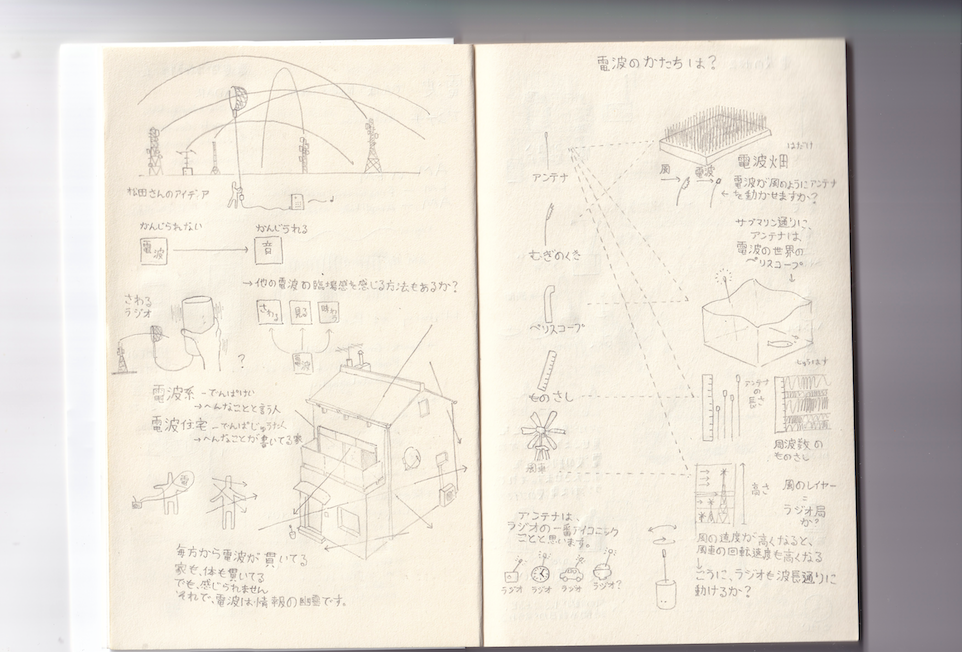
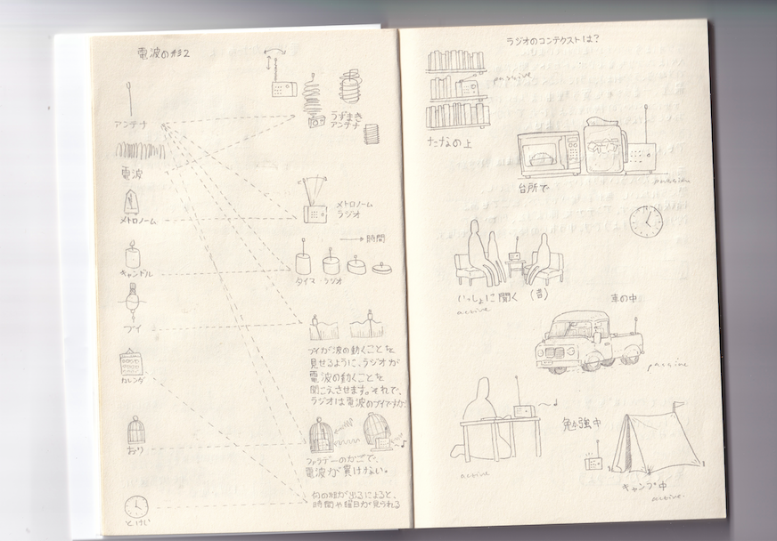
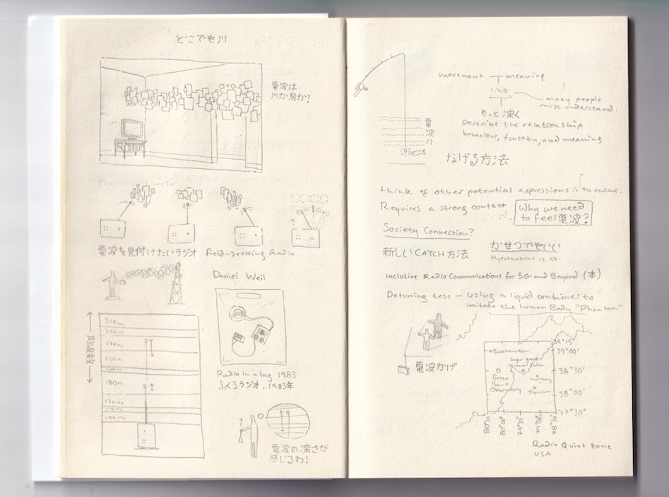
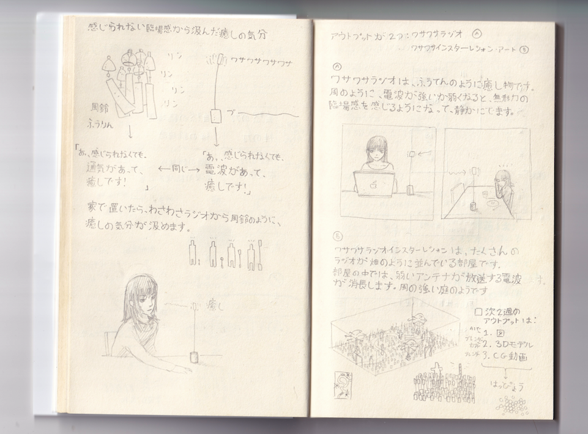
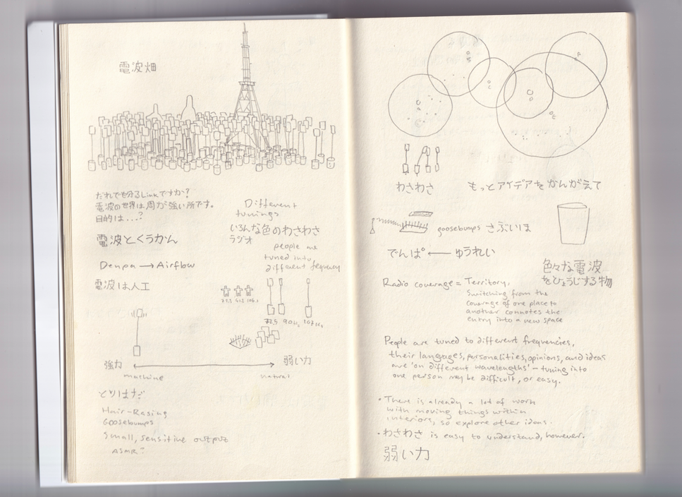
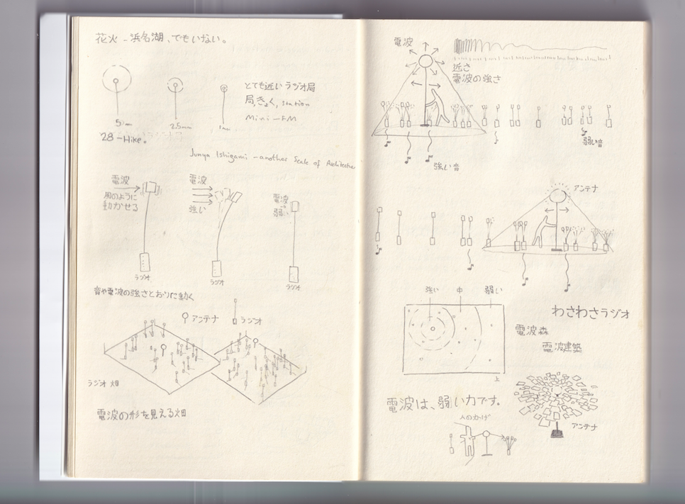
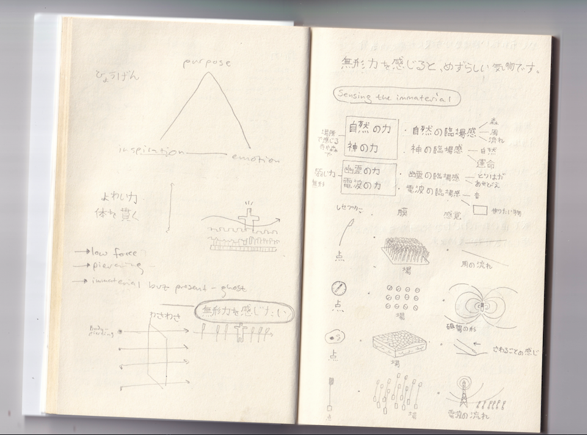
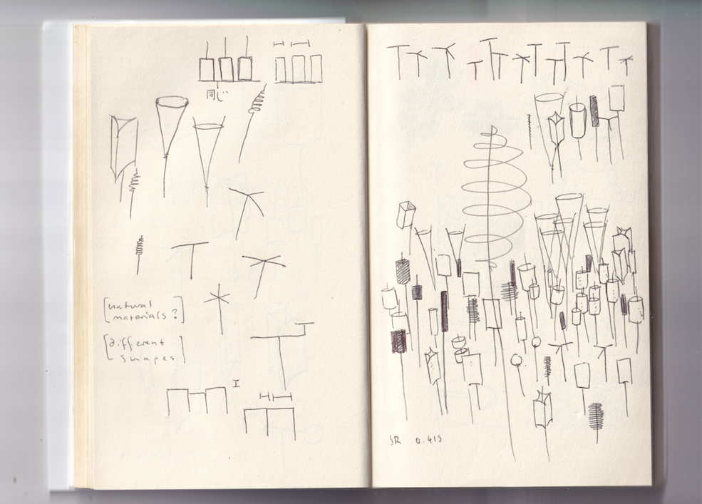
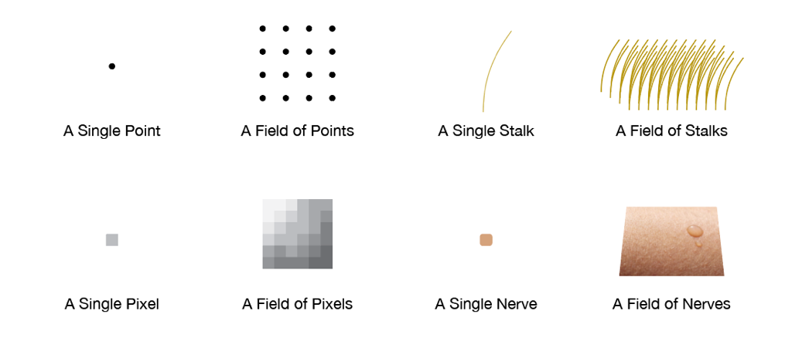

<html>

  <link rel="stylesheet" href="../popout stylesheet.css">
  <title>Radio-field　・　電波庭</title>
</html>

<body class="page">
  <div class="overall">
    <div class="header">
    <p>Radio-Field ・　電波庭</p>
    </div>

    <div class="content">

      <b><p>Project completed during internship at <a href="https://uo-design.jp/" target="blank" rel="noreferrer noopener" >UO Design</a> in Hamamatsu.</p></b>
      <p>Radio-Field is a proposal for a large-scale installation expressing the form of invisible radio waves. Manmade radio-waves are an everyday, mundane presence within our lives, blaring out on both a large scale from radio-towers worldwide, as well as on a small-scale within our homes in the form of wi-fi and bluetooth. Radio saturates our world, and is a fundamental part of technological society, but its presence is often forgotten.</p>
      <p>Radio-Field expresses the form, power, and importance of Radio’s invisible presence. A large-scale field is formed of hundreds of Radios, each extending stalks upwards which move in reaction to Radio like grass in wind. Through this physical metaphor, an imaginary sensation of Radio’s presence can be achieved.</p>
      <p>Thank you to the team at UO Design for kindly taking me as an intern. I learnt so many valuable things while interning at the studio which continue to inspire and guide my work.</p>
      <b><p>You can read more of my writing about the sensory and the invisble <a href="https://caleb-woodward.net/memo.html#:~:text=Unsensory" rel="noreferrer noopener" target="blank">here</a>.</p></b>
      <br>
      <b><p><a href="https://uo-design.jp/" target="blank" rel="noreferrer noopener" >UO Design</a>でインターンシップ中の作品。</p></b>
      <p>電波庭は、目に見えない電波の形を表現した大規模なインスタレーションの提案です。 人工の電波は、私たちの生活の中で日常的で日常的な存在であり、世界中の電波塔からの大規模なものと、Wi-FiやBluetoothの形で家庭内の小規模なものの両方に広がっています。 ラジオは私たちの世界を飽和させ、技術社会の基本的な部分ですが、その存在はしばしば忘れられています。</p>
      <p>電波庭は、無線の見えない存在の形式、力、および重要性を表します。 大規模なフィールドは何百台もの無線機で構成され、それぞれが風の草のように無線機に反応して上方に伸びる茎で構成されています。 この物理的なメタファーによって、ラジオの存在感を想像上の感覚で表現することができます。</p>
      <p>UOのチームにインターンとして受け入れていただき、ありがとうございました。 スタジオでインターンシップをしているうちに、多くの貴重なことを学び、それが私の仕事の指針となり続けています。</p>
      <br>
      <button type="button" class="collapsible"><div class="listSplitNB">
        <p>Sketchbook Scans </p>
        <p></p>
        <p style="text-align: right;">(expand)</p>
      </div></button>
      <div class="dropcontent">
        </img>
        </img>
        </img>
        </img>
        </img>
        </img>
        </img>
        </img>
      </div>
      <br><br><br><br>
      </img>
      <div class="twoSplit">
        </img>
        </img>
      </div>
      <div class="twoSplit">
        </img>
        </img>
      </div>
      </img>
      </img>

      <div class="twoSplit">
        </img>
        </img>
      </div>
      </img>

      <p></p><br>  <br>

      </img>
      <br>  <br>  <br>

    </div>


  </div>

  <script type="text/javascript">
      var coll = document.getElementsByClassName("collapsible");
      var i;

      for (i = 0; i < coll.length; i++) {
        coll[i].addEventListener("click", function() {
          this.classList.toggle("active");
          var content = this.nextElementSibling;
          if (content.style.display === "block") {
            content.style.display = "none";
          } else {
            content.style.display = "block";
          }
        });
      }

  </script>

  <div class="footer">
    <p>: : Copyright © CALEB WOODWARD 2023 - All rights reserved. : :</p>
    <!-- <p>[<a href="../index.html" target="blank">Home</a>]</p> -->
  </div>


</body>
